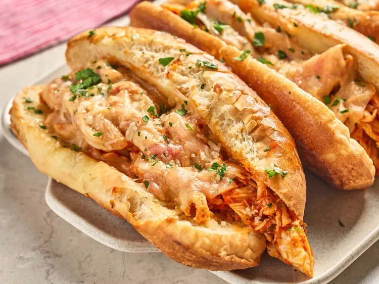

Home
Marinara Chicken Subs

Description
These marinara chicken subs are an easy, crowd-pleasing meal made with tender slow-cooked
chicken simmered in rich marinara sauce—all in the Crockpot. Piled onto toasted sub rolls
and topped with melty cheeses, theyre perfect for game day, busy weeknights, or feeding a hungry group.
Ingredients
- 3 pounds boneless skinless chicken breasts, or more to taste
- 1 1/2 (32-ounce) jars marinara sauce
- 2 teaspoons onion powder
- 1 tablespoon Italian seasoning
- 2 tablespoons minced garlic
- 1 teaspoon salt
- 1 teaspoon freshly ground black pepper
- 3/4 cup freshly grated Parmesan cheese, plus more for serving
- 1 cup shredded mozzarella cheese
- 8 slices provolone cheese
- 8 sub rolls
- 4 tablespoons butter, melted
- chopped fresh parsley, for garnish
Directions
-
Combine chicken, marinara sauce, Italian seasoning, garlic, salt,
and pepper in a crockpot. Cook on Low for 4 to 6 hours or on
High for 2 to 3 hours.
-
Turn off crockpot and transfer chicken to a cutting board.
Shred chicken into bite sized pieces using two forks or a
hand mixer and return to the crockpot. Stir in Parmesan cheese.
-
Preheat the oven to 400 degrees F (200 degrees C).
Brush the inside of each sub roll with
butter and toast in the preheated oven until golden brown.
-
Cover the inside of each toasted bun with shredded mozzarella
cheese, spoon chicken mixture into the bun and top with a slice of provolone cheese.
Set buns on a baking sheet and return to the oven for 3 to 4 minutes until cheese is melted.
-
Garnish sandwiches with chopped fresh parsley and freshly grated Parmesan cheese, if desired.